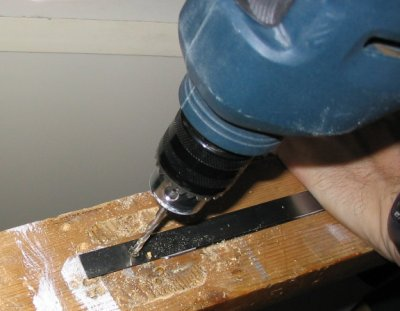
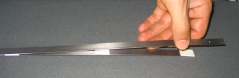
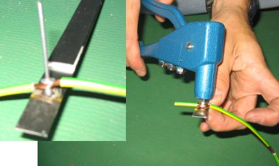
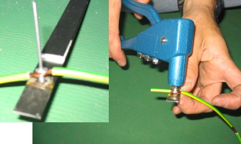
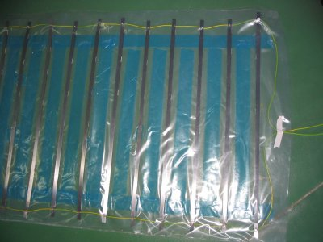

"Instruction on how to build a contact platform in order to measure the jump capacity"
Bernat Buscà Safont-Tria, Xavier de Blas Foix and Gabriel Daza Sobrino.
Original instruction by Dr. Alberto García-Fojeda.
Note:
we recommend building rigid printed circuit board platform
instead of this rods platform.
Material and tools

| MATERIALS (for the blanket of 0,80m x 1,10m) | PRICE (approximately) |
|---|
| 21m of iron strap made of tempered steel of 13mm of width and 0.50mm of thickness (for 30 sticks of 70cm) | 38 € |
| 1 roll of double slide tape Scotch 3M 19mm x 1,5m. | 3 € |
| 6 meters of double cable (1m simple for the platform and 5 meters till the Chronopic). | 3 € |
| 1 roll of 30m of double slide tape of 5cm width | 10€ |
| 2 boards of transparent plastic of 1m x 1m | 1€ |
| 2 boards of resistant canvas of 1m x 1m | 2€ |
| 1 roll of 5m of American slide tape | 10 € |
| 30 small washers for the rivets | 2 € |
| 30 aluminum/steel rivets | 4 € |
- Scissors to cut metals
- drill
- reels of 3.2mm and 2.1mm
- pistol of rivets
- “cutter”
- regular Scissors
- hammer
- tempered steel end
- Pliers
- Marker
Instruments for the construction
Time spending for the manufacturing of the platform (among 3 people): 2h-2h30' (according to the experience).
- Cut 30 pieces of 70 cm each of tempered steel/iron strap
Using the scissors (the fleje comes in roll of 5m) these pieces are called rod.

- Make a hole of 3mm 1,5cm from the extreme part of each rod. The iron strap is too hard and it will be difficult to penetrated using only the drill. We recommend to make the hole by using a hammer with the help of a tempered steel end and right after use the drill and a reel of 3,2mm.


- Place the 3M double slide tape on one side of rod along every 7cm.

- Glue another rod within the hole on the opposite side so that
excel 3cm (it is important that the extreme parts of the rods are placed over a piece of the double slide tape). To the totality of the group of the rods glued to the tape this we will call group of rods “ group of rods ”.

- Cut a piece of double cable of 1,30m, separate them converting in 2 simple cables of 1,30m.
- Mark the cable with marks of 1cm each using the marker. At the beginning is important to leave a 2 cm space without peeling to be counted since the 2 cm.
- Peel each simple cable approximately 1cm every 7cm. At the end you will have a peeled cable every 7 cm. It will be called “ peeled cable of 7cm”. Update: we recommend that this 7 cm distance is lower for not having problems on jump detection. This recommendation applies from here to the end of the text.

- Place in a parallel the “ group of rods” so that they are organized in order
(the upper rods with the hole at one side and the lower rods with the hole to the opposite side).
- Join the group of by using a piece of peeled cable of 7 cm and also using a rivet and a washer. To join them is necessary to separate half of the cable so that the rivet is able to be introduced in the middle
Do not forget to put the washer in the superior part and and the rivet with a rivet pistol (don´t leave a set of parallel rods joined by a cable in series for all the superior rods and another cable in series for that joins the inferior rods)
 

- Cut two pieces of plastic 1m by 1m.
- Place two pieces of double face slide tape of 5 cm on both sides of the plastic, upper and lower.

- Place the structure over the plastic so that the set of rods are glued on a parallel.

- Place two pieces of double face slide tape in the free space between the set of rods to fix the structure.

- Glue the other piece of plastic to protect the other side.
- Reinforce the boards using the American slide folded.

- Finally recover the blanket with the canvas to make it more resistant to possible blows .
|